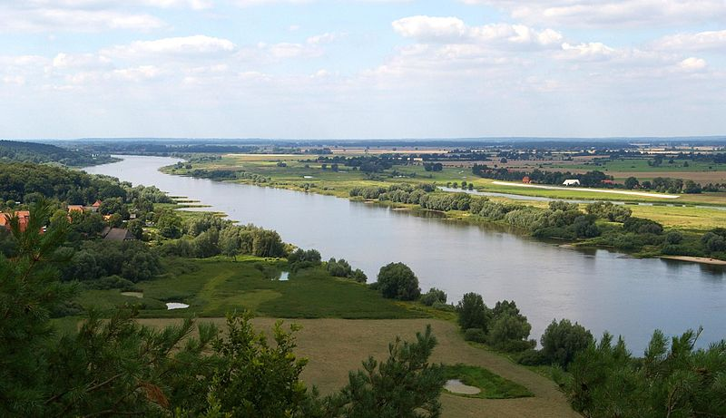

Streams in JS
Node.js and Browser
Node.js - Streams - Architecture
Agenda
- What is a Stream
- Streams versatility
- Stream tools
What is a Stream?
a stream?
„ElbeKM530“ von Christian Fischer - Eigenes Werk. Location: North-eastern Lower Saxony, Germany.. Lizenziert unter CC BY-SA 3.0 über Wikimedia Commons.
{kind=link}
distributed in time
.jpg#mediaviewer/Datei:Spring_of_Labe_(Elbe).jpg){kind=link}
„Spring of Labe (Elbe)“ von Antoni Pawłowski - Eigenes Werk. Lizenziert unter CC BY 3.0 über Wikimedia Commons.
,_Elbe,_Trischen.jpg#mediaviewer/Datei:Germany_(1),_Elbe,_Trischen.jpg){kind=link}
„Germany (1), Elbe, Trischen“ von Vincent van Zeijst - Eigenes Werk. Lizenziert unter CC BY-SA 3.0 über Wikimedia Commons.
„ElbeKM530“ von Christian Fischer - Eigenes Werk. Location: North-eastern Lower Saxony, Germany.. Lizenziert unter CC BY-SA 3.0 über Wikimedia Commons.
metaphors
{kind=link}
„ZiehbrunnenFreilichtmuseumKlockenhagenFotoAndreKaiser200711“ von Foto Andre Kaiser - Archiv Andre Kaiser. Lizenziert unter Public domain über Wikimedia Commons.
{kind=link}
„Drehbarer Wasserhahn“ von Riki1979 at de.wikipedia - Eigenes Werk (Original-Bildunterschrift: “Selbst fotografiert”).
Transferred from de.wikipedia to Commons by User:Wdwd using CommonsHelper.. Lizenziert unter Public domain über Wikimedia Commons.
{kind=link}
„McGuiresPensacolaAug2008Terlet“ von Infrogmation of New Orleans - Photo by Infrogmation. Lizenziert unter CC BY-SA 3.0 über Wikimedia Commons.

„Accretion disk“. Lizenziert unter Public domain über Wikimedia Commons.
{kind=link}
„Grand Coulee Dam“ von U.S. Bureau of Reclamation - http://users.owt.com/chubbard/gcdam/html/photos/exteriors.html. Lizenziert unter Public domain über Wikimedia Commons.
Streams are versatile
- memory control
- on-the-fly transformation
- interface
- flow control
Memory Control
var fileStream = fs.createReadStream(filename)
fileStream.on('readable', function(){
var chunk
while( (chunk = fileStream.read() ) != null )
doSomething(chunk)
})
//or
fileStream.pipe(response)On-the-fly Transform
var devocalize = new stream.Transform()
var vocals = /(a|e|i|o|u)/gi
devocalize._transform = function(chunk, enc, cb) {
var devoc = chunk.toString().replace( vocals , '')
this.push(devoc)
cb()
}
// "Hamburg" -> "Hmbrg"
request.pipe(devocalize).pipe(response)Module Interface
module.exports = Devocalize
function Devocalize(args){
Transform.call(this, args)
}
util.inherit(Devocalize, Transform)
Devocalize.prototype._transform =
function(chunk, enc, cb) {
// as before
}
//---
request.pipe(new Devocalize()).pipe(response)Flow Control
var hl = require('highland')
var server = hl('request', httpServer, ['req', 'res'])server.fork()
.filter(function(reqRes){
return reqRes.req.method === 'POST'
})
.map(function(reqResPosts){
reqRes.req
.pipe(writeFileStream(reqRes.req.url))
return reqRes.res
})
.each(function(res){
res.writeHead(201)
res.end()
})server.fork()
.filter(function(reqRes){
return reqRes.req.method === 'GET'
})
.each(function(reqRes){
fileReadStream(reqRes.req.url).pipe(reqRes.res)
})Node.js Stream (v3)
- Messages + Unix Pipes = Stream
- Readable Writable Duplex Transform
- floating - paused
{objectMode:true}- 'readable-stream'
function Dup( ){
Duplex.call(this)
}
util.inherits(Dup, Duplex)
Dup.prototype._write = function(chunk, enc, cb){
consume(chunk, enc)
cb()
}
Dup.prototype._read = function( size ){
this.push( createChunk(size) )
}function CharStream( $elem ){
Readable.call(this)
var self = this
$elem.on('keypress', function collect(event){
self.push(String.fromCharCode(event.which))
}
}
util.inherits(CharStream, Readable)
CharStream.prototype._read = function( size ){}EventStream
- a collection of user-land streams
- "a toolkit to make creating and working with streams easy"
- create a stream from a function
- Streams are like Arrays but in time
- Streams are flow control
remember devocalize?
es.map(function (data, callback) {
var result = data.replace( /(a|e|i|o|u)/gi , '')
callback(null, result)
})
// or even
es.replace(/(a|e|i|o|u)/gi , '')
more generic
es.through(function write(data) {
this.emit('data',
data.replace( /(a|e|i|o|u)/gi , '')
)
//this.pause()
},
function end () { //optional
this.emit('end')
})Highland.js
- streams + functional programming
- flow control at first
- pull-based + lazy
- curry + partial application
- forking, mapping, pattern matching
- higher order streams
higher order streams
var s = hl('request', httpServer, ['req', 'res'])
s.fork().pluck('req').map(hl)
.sequence().pipe(process.stdout)
s.fork().pluck('res').each(function(res){
res.writeHead(200)
res.end('Success!')
})construct + errors
var count = 0
var streamIntsTill100 = _(function (push, next) {
count += 1
if( count <= 100)
push(null, count++);
else
push(new Error('Overflow!'))
next()
})
streamIntsTill100
.stopOnError(console.error)
.toArray(console.log)pattern matching and curry
var zeroLength = _.where({length: 0})
var startWithHH = _.where({0: 'H', 1: 'H'})
zeroLength( _( ['', 'HH.js', function(){}, [] ] ) )
.each(console.log) // does not log 'HH.js'
startWithHH( _( ['Foobar', 'HH.js', ['H','H'] ] ) )
.each(console.log) // does not log 'Foobar'